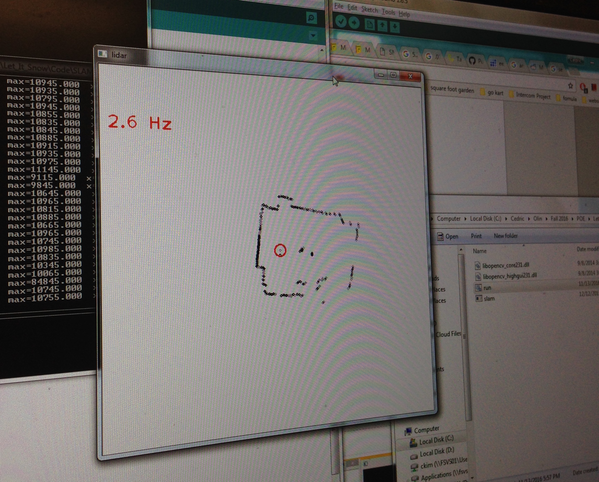
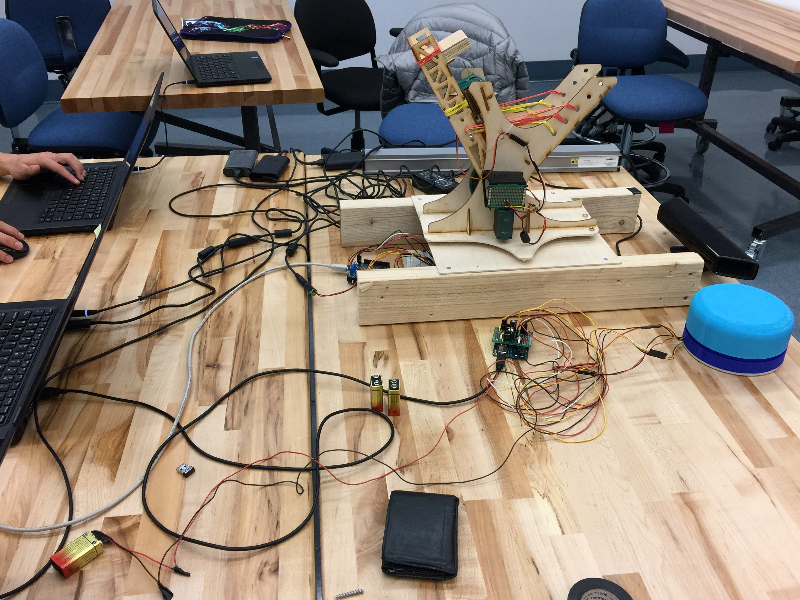

Firmware
Our Firmware Codebase consists mainly of the two Arduinos that link up to the two actuated components of our system: the LIDAR and the Launcher. The dependency for our firmware is the Adafruit Motorshield library.
View our Firmware code here
LIDAR Arduino
An Arduino is used to grab data from the LIDAR to send to the computer. The LIDAR sends distance data, while a photo interrupter and encoder wheel determines the angle that the LIDAR is currently positioned at. After sending a syncing sequence, the Arduino packages the angle and corresponding distance data into four hexadecimal numbers. This way, we can send a lot of data in a very small amount of space.
Launcher Arduino
The Arduino for the launcher is the actuated output of the system. It takes the processed data from the Main Module in Software over serial connection, which consists of an angle for the pan motor and a distance for the arm motor. The pan motor uses PID control; when an angle is received over serial, that angle becomes the set point for the PID control, and the pan motor moves the launcher to align with the set point referencing input from the pan encoder. The distance is used by the arm motor, which will pull back the arm of the launcher to the set point given by the distance using Bang-Bang control referencing input from the arm encoder. In the main loop, the pan will constantly move towards the set point given by received data. The launcher performs a specific sequence of actions to ensure that the arm will arm, fire, and re-arm in that order. Once the arm shoots and is re-arming, the pan mechanism will wait until it’s ready again. These steps continue as long as the robot is active. If at any time, the user wishes to manually control the launcher for debugging purposes or just manual control, there exists an input mechanism that can access the launcher’s control mechanisms at any time.
